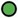

<!doctype html>
<html lang="en">
    <head>
        <meta charset="utf-8">
        <meta http-equiv="X-UA-Compatible" content="IE=edge">
        <meta name="viewport" content="initial-scale=1,user-scalable=no,maximum-scale=1,width=device-width">
        <meta name="mobile-web-app-capable" content="yes">
        <meta name="apple-mobile-web-app-capable" content="yes">
        <link rel="stylesheet" href="css/leaflet.css">
        <link rel="stylesheet" href="css/qgis2web.css"><link rel="stylesheet" href="css/fontawesome-all.min.css">
       <style>
        html, body, #map {
            width: 100%;
            height: 100%;
            padding: 0;
            margin: 0;
        }
        </style>
        <title></title>
    </head>
    <body>
        <div id="map">
        </div>
        <script src="js/qgis2web_expressions.js"></script>
        <script src="js/leaflet.js"></script>
        <script src="js/leaflet.rotatedMarker.js"></script>
        <script src="js/leaflet.pattern.js"></script>
        <script src="js/leaflet-hash.js"></script>
        <script src="js/Autolinker.min.js"></script>
        <script src="js/rbush.min.js"></script>
        <script src="js/labelgun.min.js"></script>
        <script src="js/labels.js"></script>
        <script src='https://github.com/alikeremince/HWN/blob/121dfee3b9324a14ddf24aad630c4aa21800dd0e/Harzgebiet'></script>
        <script src="data/Stempelstellen_3.js"></script>
       <script>
        var highlightLayer;
        function highlightFeature(e) {
            highlightLayer = e.target;

            if (e.target.feature.geometry.type === 'LineString') {
              highlightLayer.setStyle({
                color: '#ffff00',
              });
            } else {
              highlightLayer.setStyle({
                fillColor: '#ffff00',
                fillOpacity: 1
              });
            }
        }
        var map = L.map('map', {
            zoomControl:true, maxZoom:18, minZoom:10, zoomSnap: 0.1, maxBounds: [[51.4430,9.9082], [52.0535,11.5370]]
        }).fitBounds([[51.52098,10.40861],[51.99762,10.80437]]);
        var hash = new L.Hash(map);
        map.attributionControl.setPrefix('<a href="https://yavuzbostanci.com/" target="_blank">yasebo</a> &middot; <a href="https://leafletjs.com" title="A JS library for interactive maps">Leaflet</a> &middot; <a href="https://qgis.org">QGIS</a>');
        var autolinker = new Autolinker({truncate: {length: 30, location: 'smart'}});
        var bounds_group = new L.featureGroup([]);
        function setBounds() {
        }
        map.createPane('pane_GoogleSatellite_0');
        map.getPane('pane_GoogleSatellite_0').style.zIndex = 400;
        var layer_GoogleSatellite_0 = L.tileLayer('http://www.google.cn/maps/vt?lyrs=s@189&gl=cn&x={x}&y={y}&z={z}', {
            pane: 'pane_GoogleSatellite_0',
            opacity: 0.9,
            attribution: '<a href="https://www.google.at/permissions/geoguidelines/attr-guide.html">Map data ©2015 Google</a>',
            minZoom: 10,
            maxZoom: 22,
            minNativeZoom: 0,
            maxNativeZoom: 18
        });
        layer_GoogleSatellite_0;

        map.createPane('pane_OpenStreetMap_1');
        map.getPane('pane_OpenStreetMap_1').style.zIndex = 401;
        var layer_OpenStreetMap_1 = L.tileLayer('https://tile.openstreetmap.org/{z}/{x}/{y}.png', {
            pane: 'pane_OpenStreetMap_1',
            opacity: 0.9,
            attribution: '<a href="https://www.openstreetmap.org/copyright">© OpenStreetMap contributors, CC-BY-SA</a>',
            minZoom: 10,
            maxZoom: 22,
            minNativeZoom: 0,
            maxNativeZoom: 19
        });
        layer_OpenStreetMap_1;
        map.addLayer(layer_OpenStreetMap_1);


        function pop_Harzgebiet(feature, layer) {
            layer.on({
                mouseout: function(e) {
                    for (i in e.target._eventParents) {
                        e.target._eventParents[i].resetStyle(e.target);
                    }
                },
                mouseover: highlightFeature,
            });
            var popupContent = '<table>\
                </table>';
            layer.bindPopup(popupContent, {maxHeight: 400});
        }

        function style_Harzgebiet_0() {
            return {
                pane: 'pane_Harzgebiet',
                opacity: 1,
                color: 'rgba(223,119,8,1.0)',
                dashArray: '',
                lineCap: 'butt',
                lineJoin: 'miter',
                weight: 4.0, 
                fill: true,
                fillOpacity: 1,
                fillColor: 'rgba(223,119,8,0.23137254901960785)',
                interactive: false,
            }
        }
        map.createPane('pane_Harzgebiet');
        map.getPane('pane_Harzgebiet').style.zIndex = 402;
        map.getPane('pane_Harzgebiet').style['mix-blend-mode'] = 'normal';
        var layer_Harzgebiet = new L.geoJson(json_Harzgebiet, {
            attribution: '',
            interactive: false,
            dataVar: 'json_Harzgebiet',
            layerName: 'layer_Harzgebiet',
            pane: 'pane_Harzgebiet',
            onEachFeature: pop_Harzgebiet,
            style: style_Harzgebiet_0,
        });
        bounds_group.addLayer(layer_Harzgebiet);
        map.addLayer(layer_Harzgebiet);
        function pop_Stempelstellen_3(feature, layer) {
            layer.on({
                mouseout: function(e) {
                    for (i in e.target._eventParents) {
                        e.target._eventParents[i].resetStyle(e.target);
                    }
                },
                mouseover: highlightFeature,
            });
            var popupContent = '<table style="width:100%">\
                    <tr>\
                        <th style="text-align: right;">Stempel </th>\
                        <th style="text-align: left;" >' + (feature.properties['No'] !== null ? autolinker.link(feature.properties['No'].toLocaleString()) : '') + '</th>\
                    </tr>\
                    <tr>\
                        <td colspan="2" style="text-align: center;" >' + (feature.properties['Name'] !== null ? autolinker.link(feature.properties['Name'].toLocaleString()) : '') + '</td>\
                    </tr>\
                </table>';
            layer.bindPopup(popupContent, {maxHeight: 400});
        }

        function style_Stempelstellen_3_0(feature) {
            switch(String(feature.properties['Collected'])) {
                case 'Yes':
                    return {
                pane: 'pane_Stempelstellen_3',
                radius: 6.0,
                opacity: 1,
                color: 'rgba(0,0,0,1.0)',
                dashArray: '',
                lineCap: 'butt',
                lineJoin: 'miter',
                weight: 2.0,
                fill: true,
                fillOpacity: 1,
                fillColor: 'rgba(84,176,74,1.0)',
                interactive: true,
            }
                    break;
                case 'No':
                    return {
                pane: 'pane_Stempelstellen_3',
                radius: 6.0,
                opacity: 1,
                color: 'rgba(0,0,0,1.0)',
                dashArray: '',
                lineCap: 'butt',
                lineJoin: 'miter',
                weight: 2.0,
                fill: true,
                fillOpacity: 1,
                fillColor: 'rgba(255,255,255,1.0)',
                interactive: true,
            }
                    break;
            }
        }
        map.createPane('pane_Stempelstellen_3');
        map.getPane('pane_Stempelstellen_3').style.zIndex = 403;
        map.getPane('pane_Stempelstellen_3').style['mix-blend-mode'] = 'normal';
        var layer_Stempelstellen_3 = new L.geoJson(json_Stempelstellen_3, {
            attribution: '',
            interactive: true,
            dataVar: 'json_Stempelstellen_3',
            layerName: 'layer_Stempelstellen_3',
            pane: 'pane_Stempelstellen_3',
            onEachFeature: pop_Stempelstellen_3,
            pointToLayer: function (feature, latlng) {
                var context = {
                    feature: feature,
                    variables: {}
                };
                return L.circleMarker(latlng, style_Stempelstellen_3_0(feature));
            },
        });
        bounds_group.addLayer(layer_Stempelstellen_3);
        map.addLayer(layer_Stempelstellen_3);
		
           var abstract = new L.Control({'position':'topright'});
            abstract.onAdd = function (map) {
                this._div = L.DomUtil.create('div',
                'leaflet-control abstract');
                this._div.id = 'abstract'

                    abstract.show();
                    return this._div;
                };
                abstract.show = function () {
                    this._div.classList.remove("abstract");
                    this._div.classList.add("abstractUncollapsed");
                    this._div.innerHTML = 
			'<table style="width:100%">\
			<tr><th colspan="3">Harzer Wandernadel Map of Kerem</th></tr>\
			<tr><td style="text-align: right;"></td><td style="text-align: left;"> Free</td><td rowspan="2" style="text-align: left;">45 / 222</td></tr>\
			<tr><td style="text-align: right;"></td><td style="text-align: left;"> Collected</td></tr>\
			</table>';
            };
            abstract.addTo(map);
		
        setBounds();
        </script>
    </body>
</html>